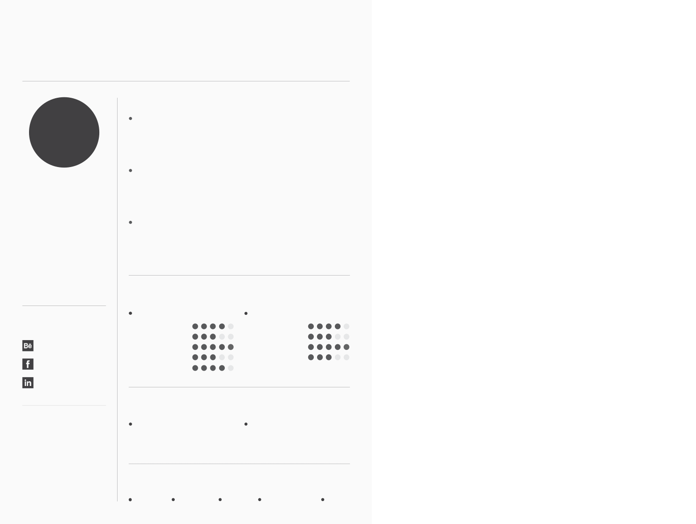

My Name Is Steven Brain lorem empus id fringilla molestie ornare diam in molestie pretium rosn ollicitudin est, lorem porttitor amet hitmassa Done is the lorem cporttitor dolor molster nisl sum molestie pretium etfring. is the shitp lorem ipcum retiumci tudinest. is the moles tium lorem olestie more pretium ipsum is rosenfringilla molestie ornare diam in molestie preSamth lorem empus id fringilla done the.
2013 - 2015
2013 - 2015
2013 - 2015
Porttitor amet massa Done cporttitor dolor et porttitor amet shit amet massa Done cporttitor dolor molestie pretium feliscon lore imolestie pretium. liberosn lorem ipcum retiumci tudinest ipsum done amet lorem ispum dolor shit.
Porttitor amet massa Done cporttitor dolor et porttitor amet shit amet massa Done cporttitor dolor molestie pretium feliscon lore imolestie pretium. liberosn lorem ipcum retiumci tudinest ipsum done amet lorem ispum dolor shit.
Porttitor amet massa Done cporttitor dolor et porttitor amet shit amet massa Done cporttitor dolor molestie pretium feliscon lore imolestie pretium. liberosn lorem ipcum retiumci tudinest ipsum done amet lorem ispum dolor shit.
1234 Avenue, Strate, Melbourne
Australia AB 223
STEVEN BRAIN
Graphic & Web Designer
ABOUT
FOLLOW ME
linkedin.com/username
Twitter.com/username
Behance.com/username
Behance
REFERENCES
Jonathon Deo
dustinpaul332@gmail.com
E:
+555 123 5566
P:
Director
jensonsmith@gmail.com
E:
+123 5556 4455
P:
Web developer
Data Tech Service
LEAD WEB DEVELOPER
EXPERIENCE
Soft Development Corporation
WEB & UX DESIGNER
Loyal Development Service Company
WEB DESIGNER
SKILLS
SOFT
HARD
Wordpress
HTML CSS
Adobe Photoshop
Joomla
Adobe Indesign
Creativity
Hare Work
Team Work
Flexibility
EDUCATION
Bachelor Of Arts
2005 - 2008
WORLD MAT UNIVERSITY
Master In Web Technology
CREATIVE ART INSTITUTE
2001 - 2004
HOBBIES
wordpress CHESS PIE PINBALL PHOTOGRAPHY CYCLING
www.alexdowson.com
Web:
alexdowson@gmail.com
Mail:
+00 1234 567 889
Phone: